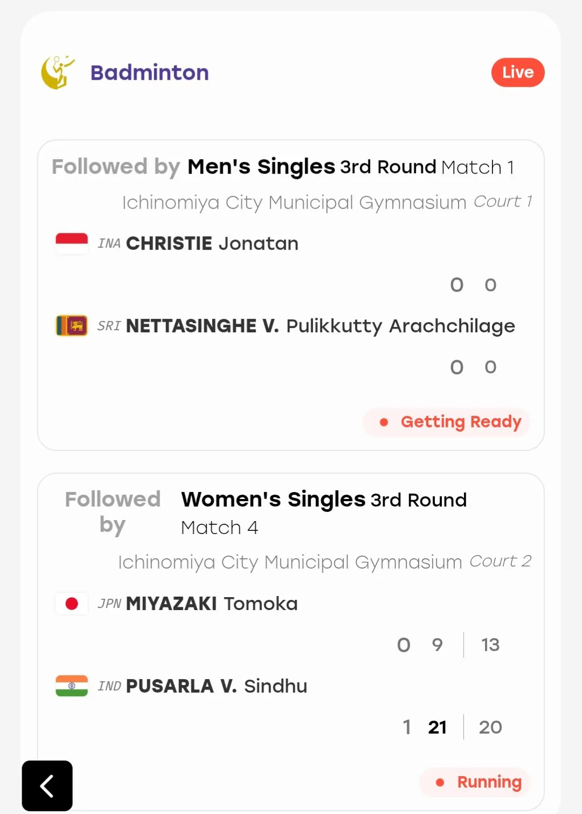

현재 일본도 밤 12시 50분이 지난 상황인데
32강 16강 일부 종목을 하루에 다 해서 2경기씩 뛰게 해놓음
경기수가 너무 많아서
새벽 1시에 마지막 경기 시작할 기세
지금 몸푸는 중 ㅅㅂ ㅋㅋㅋㅋ
참고로 인도네시아 조나단 크리스티는 남자 단식 세계 1위인데 낮에뛰고 지금까지 대기함
내일 경기 또뛰는데 대회를 새벽 2시까지 하는 대회가 어딨음?
운영 개찐빠임

현재 일본도 밤 12시 50분이 지난 상황인데
32강 16강 일부 종목을 하루에 다 해서 2경기씩 뛰게 해놓음
경기수가 너무 많아서
새벽 1시에 마지막 경기 시작할 기세
지금 몸푸는 중 ㅅㅂ ㅋㅋㅋㅋ
참고로 인도네시아 조나단 크리스티는 남자 단식 세계 1위인데 낮에뛰고 지금까지 대기함
내일 경기 또뛰는데 대회를 새벽 2시까지 하는 대회가 어딨음?
운영 개찐빠임
이 좆같이 음흉한 새끼들 안세영 경기 중계도 안해준다며
후진국 다 됐네
한국에서 이랬으면 서울시 공무원 끌어다 보냈으려나
내생각에 찐빠를 잡을 능력이 안되니까 찐빠 그자체를 컨셉을 그렇게 잡은듯
왜 일본은 경기를 새벽에 해요?
시차가잇나봐요
일본 우리 반대편에 있냐? 새벽에 중계봐야됨?
남자 배드민턴 개인 세계랭킹 1위인가 2위였나.. 전대회 우승자 중국인을 우리나라 선수가 오후에 이겼는데 2번째 경기를 밤 10시? 11시쯤 홍콩 선수랑 붙었음. 1셋 가져왔는데 2셋부터 다리에 문제 생기더니 결국 3셋 초반에 기권하더라.. 일단 다른 나라들은 기회임. 우리나라 선수 두명이 중국 선수 두명 다 떨어뜨려서...
대회기간동안 원래 배드민턴 같은 종목은 하루에 2~3경기씩 함 근데 새벽까지 경기하는건 오바네
한국 단식 선수 두명 기권함
아 일본은..